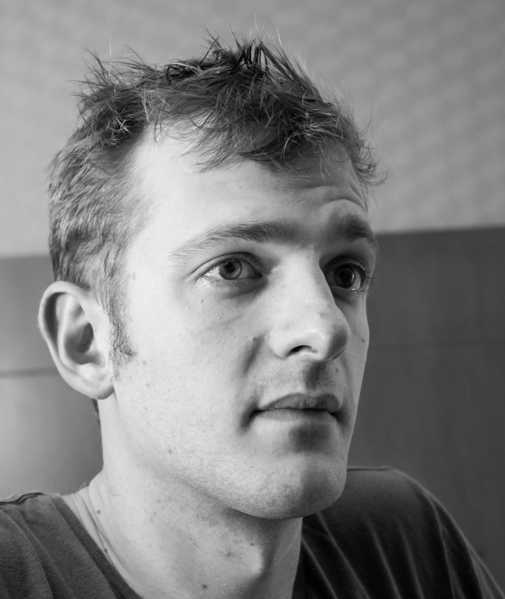

Senior compiler and language frontend engineer
I am a language geek. My passion is in compilers and language design. I developped several interpreters, worked on a few compilers, and designed or helped design several computer languages.
I’m fluent in many computer languages, and can learn new ones easily.

Compiler/language front-end engineer. Lead developper/team manager
Lead developper/manager of the Libadalang & Langkit projects.
Lead developer & manager of LKQL, a query language for syntax trees.
Member of the Ada Rapporteur Group (group in charge of the standardization of the Ada language) since 2015.
Lead language design at AdaCore.
Initial developper (together with @derodat) of the GNAT-llvm project, a middle-end for the GNAT compiler to emit LLVM IR.
Co-authored and presented Application of SMT in a Meta-Compiler: A Logic DSL for Specifying Type Systems, together with Romain Beguet.
Co-wrote the Introduction to Ada course/book.
Freelance for e-loue – Python – Django development. Development of a dynamic application backed by a rest API, using Django/Tastypie and backbone.js.
Four months internship at Paperblog – news and information website, using Python – Django Infrastructure and front-end development. Web scraping engine using Coffeescript.
Camllvm - An LLVM based bytecode compiler for OCaml.
ada-synth-lib - A very simple sound/music synthesis library.
lune - A small functional language with Hindley-Milner type inference and typeclasses